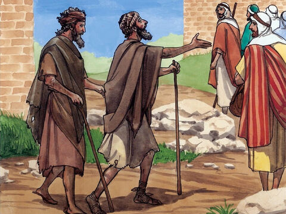
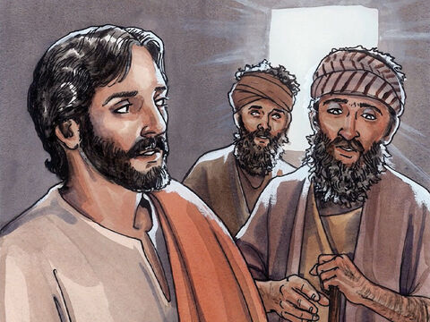
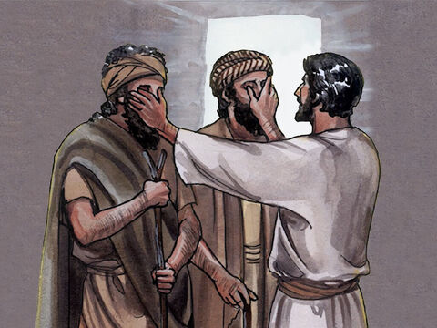
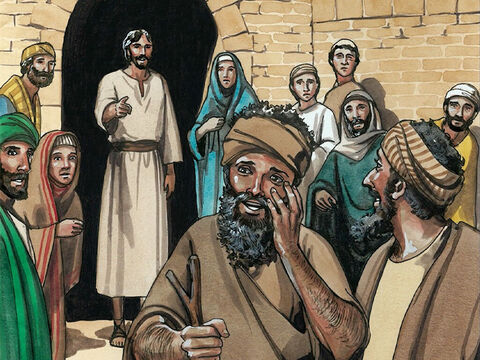
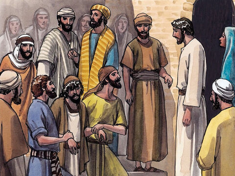
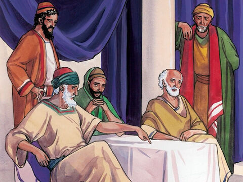

Lord Jesus Heals Two Blind Men
And as they departed from Jericho, a great multitude followed him.
And, behold, two blind men sitting by the way side, when they heard that Jesus passed by, cried out, saying, Have mercy on us, O Lord, thou son of David.
And the multitude rebuked them, because they should hold their peace: but they cried the more, saying, Have mercy on us, O Lord, thou son of David.
And Jesus stood still, and called them, and said, What will ye that I shall do unto you?
They say unto him, Lord, that our eyes may be opened.
So Jesus had compassion on them, and touched their eyes: and immediately their eyes received sight, and they followed him.
Matthew 20:29-34
- 
- 
- 
- 
- 
- 